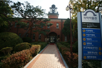
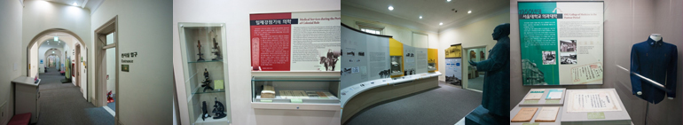

서울대학교병원 의학박물관은 한국에서 가장 오래된 근대병원 건물인 대한의원 본관(사적 제 248호)에 자리하고 있습니다. 대한의원은 1907년 대한제국 고종 황제의 칙명으로 설립된 종합병원입니다. 대한의원은 개화기 의료 근대화를 위한 국가적 노력의 결실로서 우리나라 최초의 서양식 국립병원인 제중원의 맥을 잇고 있습니다. 1992년 서울대학교병원이 소장하고 있던 의학 관련 유물과 문서들을 보존, 연구, 전시할 목적으로의학박물관이 이 유서 깊은 건물 안에 설치되었습니다.
본 박물관의 소장품은 대한의원 개원 칙서 등 대한의원 관련 유물을 비롯하여 서울대학교병원의 역사와 한국 근현대 의료의 역사를 보여주는 각종 자료 및 기증품 등으로 구성되어 있습니다. 이러한 소장품을 바탕으로 근대 의료 역사를 한눈에 살필 수 있는 상설 전시와 연 2회 특별전을 기획·진행하고 있으며, 방학 기간에는 다양한 주제의 교육프로그램을 운영하고 있습니다.
